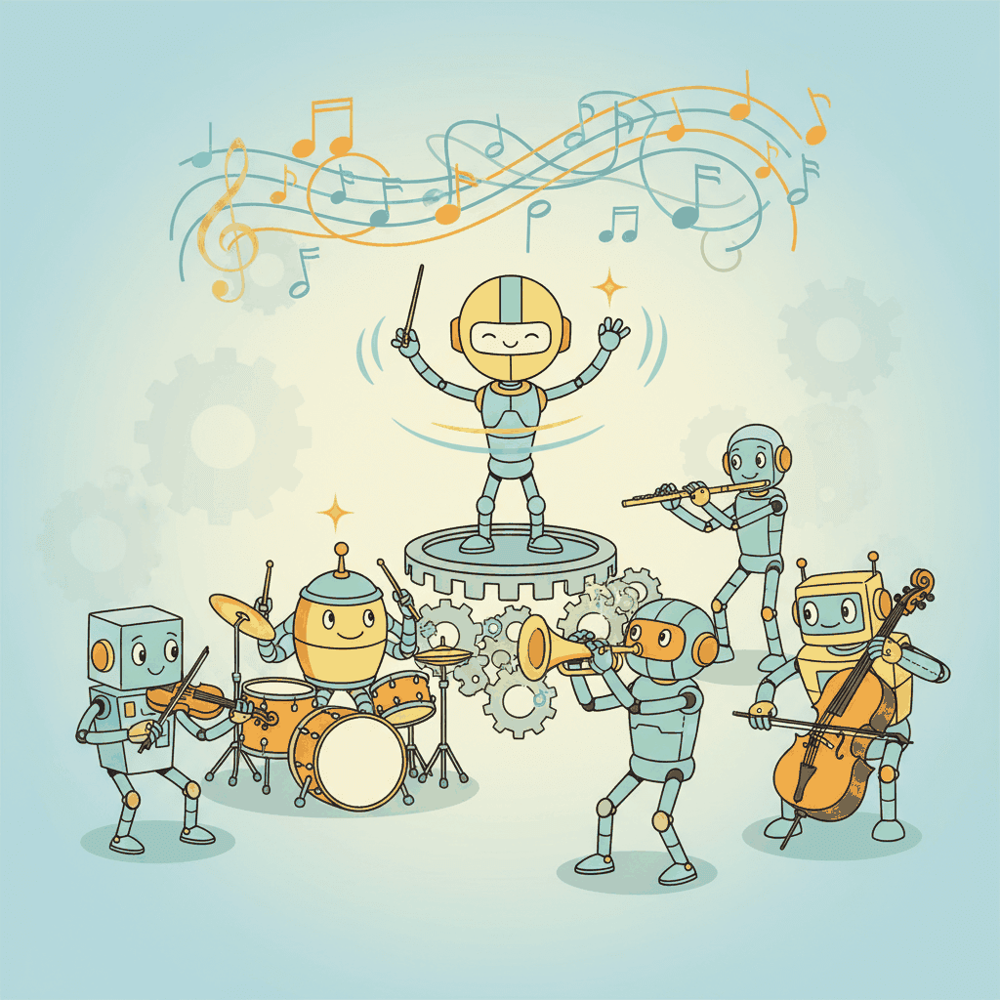

"Choosing a framework is easy. Living with that choice for two years is the hard part."
Census, Framework-Fatigued AI Agent
The agent framework you choose shapes every architectural decision that follows. By 2026 the landscape includes production-grade options from major cloud providers, well-funded startups, and active open-source communities, each making different tradeoffs between simplicity and control. LangGraph offers graph-based orchestration with fine-grained state management. The OpenAI Agents SDK provides a minimal, opinionated interface tied to OpenAI models. CrewAI and AutoGen prioritize multi-agent collaboration patterns. Understanding these tradeoffs is essential for selecting the right foundation, and this section compares them head-to-head with runnable examples of the same agent built in three frameworks. The agent foundations from Chapter 26 and the tool use protocols from Chapter 27 are prerequisites for all frameworks covered here.
Prerequisites
This section builds on tool use and protocols from Chapter 27 and agent foundations from Chapter 26.

For a hands-on LangChain and LangGraph tutorial with runnable examples, see Appendix J: LangChain.
23.1.1 The Framework Landscape in 2026
Anthropic's Claude Agent SDK (anthropic-ai/claude-agent-sdk) is the code-first counterpart to OpenAI Agents SDK. Default to Claude models, built-in tool calling, multi-agent handoffs, and integrated tracing. Architecturally similar to OpenAI Agents SDK; the main difference is provider binding. Teams already on PydanticAI can reach both providers with a single string swap; the platform SDKs matter most when you want tighter integration with provider-specific features (extended thinking on Claude, Realtime API on OpenAI). For a vendor-neutral starting point, prefer PydanticAI or LangGraph; reach for the platform SDKs once you commit to a provider for production.
The deep treatment of the single-agent loop lives in Section 26.1. The discussion below focuses on how that loop scales across agents.
By early 2026 the multi-agent framework landscape has consolidated into a handful of production-grade choices, each with a different sweet spot of control vs. abstraction, single-agent vs. orchestrated, and vendor-neutral vs. provider-native.
LangGraph (LangChain) models agents as directed graphs where nodes are functions and edges define control flow. State is passed between nodes as a typed dictionary, and conditional edges enable branching logic. LangGraph's strength is fine-grained control: you define exactly how the agent loop works, where checkpoints are saved, and how errors are handled. Its weakness is verbosity. Simple agents require more boilerplate than higher-level frameworks.
CrewAI takes a role-based approach inspired by human teams. You define agents with roles, goals, and backstories, then assemble them into crews that execute tasks. CrewAI abstracts away the graph structure, making it fast to prototype collaborative multi-agent systems. The trade-off is less control over execution flow: you cannot easily implement custom conditional logic or fine-grained state management. CrewAI is excellent for content generation, research, and analysis workflows where the flow is relatively linear.
AutoGen/AG2 (Microsoft) focuses on multi-agent conversation. Agents communicate through structured messages, with patterns like GroupChat managing turn-taking and topic management. AutoGen excels at debate-style interactions and code review workflows where agents need to build on each other's outputs. OpenAI Agents SDK provides a minimal, provider-native framework with built-in support for tool use, handoffs between agents, and guardrails. Google ADK integrates tightly with Gemini and Google Cloud services. smolagents (Hugging Face) emphasizes simplicity and code-based tool execution. PydanticAI brings type safety to agent development with Pydantic model validation. Semantic Kernel (Microsoft) integrates with the .NET and Java ecosystems.
Framework choice should be driven by your control requirements, not by popularity. If you need full control over state transitions, checkpointing, and error handling, use LangGraph or build a custom loop. If you want fast prototyping with role-based agents, use CrewAI. If you need provider-native integration, use the OpenAI Agents SDK or Google ADK. If you are building a simple tool-using agent, the raw API with a manual loop may be simpler than any framework. The best framework is the one that matches your team's skill set and your application's complexity.
The Same Agent in Three Frameworks
This snippet implements the same research agent in LangGraph, CrewAI, and OpenAI Swarm to compare framework APIs.
# LangGraph: Research Agent
from langgraph.graph import StateGraph, END
from typing import TypedDict, Annotated
from langgraph.graph.message import add_messages
class ResearchState(TypedDict):
messages: Annotated[list, add_messages]
search_results: list
report: str
def search_node(state):
query = state["messages"][-1].content
results = web_search(query)
return {"search_results": results}
def write_node(state):
report = llm.invoke(
f"Write a research report based on:\n{state['search_results']}"
)
return {"report": report.content}
graph = StateGraph(ResearchState)
graph.add_node("search", search_node)
graph.add_node("write", write_node)
graph.set_entry_point("search")
graph.add_edge("search", "write")
graph.add_edge("write", END)
research_agent = graph.compile()# CrewAI: Research Agent
from crewai import Agent, Task, Crew
researcher = Agent(
role="Research Analyst",
goal="Find comprehensive information on the given topic",
tools=[web_search_tool],
llm="gpt-4o",
)
writer = Agent(
role="Report Writer",
goal="Write a clear, well-structured research report",
llm="gpt-4o",
)
search_task = Task(
description="Research the topic: {topic}",
agent=researcher,
expected_output="A list of key findings with sources",
)
write_task = Task(
description="Write a research report from the findings",
agent=writer,
expected_output="A well-structured research report",
context=[search_task],
)
crew = Crew(agents=[researcher, writer], tasks=[search_task, write_task])
result = crew.kickoff(inputs={"topic": "quantum computing advances in 2025"})# OpenAI Agents SDK: Research Agent
from openai import agents
search_agent = agents.Agent(
name="researcher",
instructions="Search the web for information on the given topic.",
tools=[web_search_tool],
model="gpt-4o",
)
writer_agent = agents.Agent(
name="writer",
instructions="Write a research report from the provided findings.",
model="gpt-4o",
)
# Use handoff to chain agents
orchestrator = agents.Agent(
name="orchestrator",
instructions="Coordinate research: first search, then write a report.",
handoffs=[search_agent, writer_agent],
model="gpt-4o",
)
result = agents.Runner.run_sync(orchestrator, "Research quantum computing advances")Lab: Build the Same Agent in Three Frameworks
In this lab, you will implement an identical research agent in LangGraph, CrewAI, and the OpenAI Agents SDK. You will compare the developer experience, code complexity, execution traces, and output quality across frameworks.
Tasks:
- Implement a research agent that searches the web, evaluates sources, and writes a report
- Run all three implementations on the same 5 research queries
- Compare: lines of code, number of LLM calls, total tokens used, output quality (human rating 1 to 5)
- Document which framework you would choose for different use cases and why
The framework matters less than the architecture. The most common mistake teams make is spending weeks evaluating frameworks when the real question is: what architecture does your agent need? Determine first whether you need a single-agent loop, a pipeline, a supervisor with specialists, or a peer-to-peer mesh (see Section 28.2 for architecture patterns). Then select the framework that best supports that architecture. A supervisor pattern is straightforward in any framework. A complex mesh with conditional routing and checkpointing demands LangGraph or a custom solution. The architecture decision constrains the framework choice, not the other way around.
23.1.2 Framework Selection Guide
Choosing a framework is a consequential decision that affects development speed, maintenance burden, and scaling potential. The decision matrix should consider: team expertise (Python familiarity, async programming comfort), application complexity (simple tool loop vs. complex multi-agent workflow), deployment requirements (cloud provider preferences, compliance constraints), and long-term flexibility (will you outgrow the framework's abstractions?).
For startups and prototypes, start with a higher-level framework (CrewAI, PydanticAI) or the native provider SDK. These minimize boilerplate and let you focus on the agent's logic rather than infrastructure. For production systems with complex state management, conditional workflows, and compliance requirements, LangGraph or a custom framework built on the raw API provides the control you need. For organizations committed to a specific cloud provider, the provider's SDK (OpenAI Agents SDK, Google ADK, Semantic Kernel for Azure) integrates most smoothly with the surrounding infrastructure.
# Install dependencies for the multi-agent framework selection lab
# torch + transformers cover the LLM backbone; numpy supports the scoring helpers
pip install torch transformers numpy# Lab starter: framework selection skeleton. Students fill in the TODOs.
# Goal: given a list of candidate frameworks and a task description, score them.
from typing import Iterable
import numpy as np
FRAMEWORKS = ["LangGraph", "AutoGen", "CrewAI", "Swarm"]
def load_task_description() -> str:
"""TODO: load the task description from prompt.txt or your dataset."""
raise NotImplementedError
def score_framework(name: str, description: str) -> float:
"""TODO: call your LLM with a scoring prompt; return a 0.0-1.0 fit score.
Hints:
- Build a small prompt template that lists the framework's strengths
- Ask the model to rate task fit on a 0-10 scale, then divide by 10
"""
raise NotImplementedError
def rank(frameworks: Iterable[str], description: str) -> list[tuple[str, float]]:
"""Score each candidate and return them sorted high-to-low."""
scored = [(name, score_framework(name, description)) for name in frameworks]
return sorted(scored, key=lambda x: -x[1])
if __name__ == "__main__":
task = load_task_description()
for name, fit in rank(FRAMEWORKS, task):
print(f" {name:>10s}: {fit:.2f}")# Full solution for the framework-selection lab.
# Uses an LLM judge to score each candidate on the task description.
from openai import OpenAI
from pathlib import Path
client = OpenAI()
FRAMEWORKS = {
"LangGraph": "Strong for explicit graph-based control flow; good with cycles and conditional edges; native LangChain integration.",
"AutoGen": "Optimized for conversational multi-agent systems; group chat patterns; human-in-the-loop friendly.",
"CrewAI": "Role-based agents (manager, researcher, writer); sequential or hierarchical processes; simple API.",
"Swarm": "Minimal, stateless agent routing primitives; good for tool-handoff patterns; easy to inspect.",
}
JUDGE_PROMPT = """Rate how well the framework below fits the task on a 0-10 scale.
Return ONLY a number between 0 and 10.
Framework: {name}
Description: {desc}
Task: {task}
Score:"""
def load_task_description() -> str:
p = Path("prompt.txt")
if p.exists(): return p.read_text(encoding="utf-8")
return "Build a 3-agent pipeline for researching, drafting, and editing news articles."
def score_framework(name: str, task: str) -> float:
resp = client.chat.completions.create(
model="gpt-4o-mini",
messages=[{"role": "user", "content": JUDGE_PROMPT.format(name=name, desc=FRAMEWORKS[name], task=task)}],
temperature=0.0,
max_tokens=4,
)
try:
return float(resp.choices[0].message.content.strip()) / 10.0
except ValueError:
return 0.5
if __name__ == "__main__":
task = load_task_description()
scored = sorted(((n, score_framework(n, task)) for n in FRAMEWORKS), key=lambda x: -x[1])
print(f"Task: {task!r}\n")
for name, fit in scored:
print(f" {name:>10s}: {fit:.2f}")Who: The founding engineer at a Series B market intelligence startup with a team of four developers.
Situation: The team built their initial product (3 agents producing market research reports) with CrewAI in two weeks. The prototype impressed investors and landed the first 50 customers.
Problem: At 500 customers, the product needed conditional workflows (different report types for different industries), persistent checkpointing (resume interrupted reports after timeouts), and custom error handling (graceful recovery when a data source was unavailable). CrewAI's high-level abstractions made each of these features difficult to implement without fighting the framework.
Decision: After two weeks of failed workarounds, the team committed to migrating from CrewAI to LangGraph. The graph-based approach handled conditional workflows through explicit state transitions, and built-in checkpointing enabled the resume feature natively.
Result: Migration took four weeks and doubled the total codebase, but the team gained full control over execution flow. Time to ship new report types dropped from two weeks to two days. No further framework limitations were encountered through the next 2,000 customers.
Lesson: Start with a high-level framework when speed to market matters, but plan for migration if you anticipate complex workflows; the cost of migrating early is always lower than migrating late.
Objective
Apply the concepts from this section by building a working implementation related to 2. Framework Selection Guide.
What You'll Practice
- Implementing core algorithms covered in this section
- Configuring parameters and evaluating results
- Comparing different approaches and interpreting trade-offs
Setup
The following cell installs the required packages and configures the environment for this lab.
pip install torch transformers numpyA free Colab GPU (T4) is sufficient for this lab.
Steps
Step 1: Setup and data preparation
Load the required libraries and prepare your data for the Framework Selection Guide lab.
# TODO: Implement setup code hereExpected Output
- A working implementation demonstrating the Framework Selection Guide lab
- Console output showing key metrics and results
Stretch Goals
- Experiment with different hyperparameters and compare outcomes
- Extend the implementation to handle more complex scenarios
- Benchmark performance and create visualizations of the results
Complete Solution
# Complete solution for the Framework Selection Guide lab
# TODO: Full implementation hereExercises
Compare LangGraph, CrewAI, and AutoGen on three dimensions: ease of setup, flexibility of agent topologies, and production readiness. Which framework would you choose for a quick prototype vs. a production system?
Answer Sketch
LangGraph: most flexible (arbitrary graph topologies), production-ready, steeper learning curve. CrewAI: easiest setup (role-based agents), good for team simulations, less flexible topology. AutoGen: strong multi-agent conversations, good for research, evolving production story. Quick prototype: CrewAI for its simplicity. Production: LangGraph for its explicit state management and observability hooks.
A startup needs to build a customer support agent that escalates complex issues to specialists. List five criteria they should use to select an agent framework, and rank them by importance.
Answer Sketch
1. Production reliability (error handling, retries, observability). 2. Human-in-the-loop support (escalation, approval workflows). 3. State management (conversation history, customer context). 4. Integration ecosystem (CRM, ticketing, knowledge base connectors). 5. Team expertise (learning curve, documentation quality). Reliability and HITL support are most critical for customer-facing applications.
Build a simple two-agent LangGraph workflow where a 'researcher' agent gathers information and a 'writer' agent produces a summary. Use typed state to pass information between agents.
Answer Sketch
Define a TypedDict state with fields for query, research_results, and final_summary. Create two nodes (researcher, writer). The researcher populates research_results; the writer reads them and produces final_summary. Connect with graph.add_edge('researcher', 'writer'). Compile and invoke with the initial query.
Using CrewAI, define a crew of three agents (Researcher, Analyst, Reporter) that work together to produce a market analysis report. Specify each agent's role, goal, and backstory.
Answer Sketch
Each agent gets a role string, a goal describing its objective, and a backstory providing context. The Researcher searches for data, the Analyst identifies trends and insights, and the Reporter writes the final document. Tasks are defined with expected outputs and assigned to specific agents. The crew is configured with a sequential process.
What are the risks of building a production agent system on a specific framework? How can you architect your system to minimize framework lock-in?
Answer Sketch
Risks: framework may become unmaintained, its API may change breaking your code, or it may not scale to your needs. Mitigation: separate business logic from framework-specific code using an adapter pattern. Define your own tool interface and agent interface; implement framework-specific adapters. Store state in your own database rather than relying on framework state management. This lets you swap frameworks without rewriting core logic.
Multi-agent systems add communication overhead and failure modes. Start with two agents (for example, a planner and an executor) and verify they coordinate reliably before adding more. Each additional agent multiplies debugging complexity.
- The multi-agent framework landscape includes LangGraph, CrewAI, AutoGen, and several others, each with distinct abstractions.
- Framework choice depends on your needs: LangGraph for fine-grained control, CrewAI for rapid prototyping, AutoGen for conversational patterns.
- Building the same agent in multiple frameworks is the best way to evaluate which one fits your use case.
Show Answer
Examples: (1) LangGraph uses a state-graph abstraction for fine-grained control over agent workflows. (2) CrewAI uses a role-based 'crew' metaphor for rapid prototyping of collaborative agents. (3) AutoGen focuses on conversation-based multi-agent interaction with human-in-the-loop support.
Show Answer
Different frameworks impose different abstractions and constraints. Building the same agent in multiple frameworks reveals which abstractions match your use case, which frameworks have better documentation and ecosystem support, and which ones create friction for your specific requirements.
What Comes Next
In the next section, Architecture Patterns, we examine the core topologies for organizing multi-agent systems: hierarchical, flat, and hybrid patterns with their respective tradeoffs.
Bibliography and Further Reading
Multi-Agent Frameworks
Introduces role-playing communication between agents, one of the earliest multi-agent frameworks and a precursor to modern multi-agent systems.
Introduces structured SOPs (Standard Operating Procedures) for multi-agent software development, demonstrating how role specialization and communication protocols improve collaboration.
Microsoft's framework for building multi-agent conversation systems with customizable agent types, conversation patterns, and human-in-the-loop capabilities.
Framework Comparison and Selection
Comprehensive survey of multi-agent systems covering framework architectures, communication mechanisms, and application domains, useful for framework comparison.
LangChain (2024). "LangGraph: Build Stateful Multi-Actor Applications." LangGraph Documentation.
Official documentation for LangGraph, a graph-based framework for building stateful, multi-step agent workflows with persistence and human-in-the-loop support.
CrewAI (2024). "CrewAI Documentation." docs.crewai.com.
Documentation for CrewAI, a role-based multi-agent framework that organizes agents into crews with defined tasks, tools, and delegation patterns.